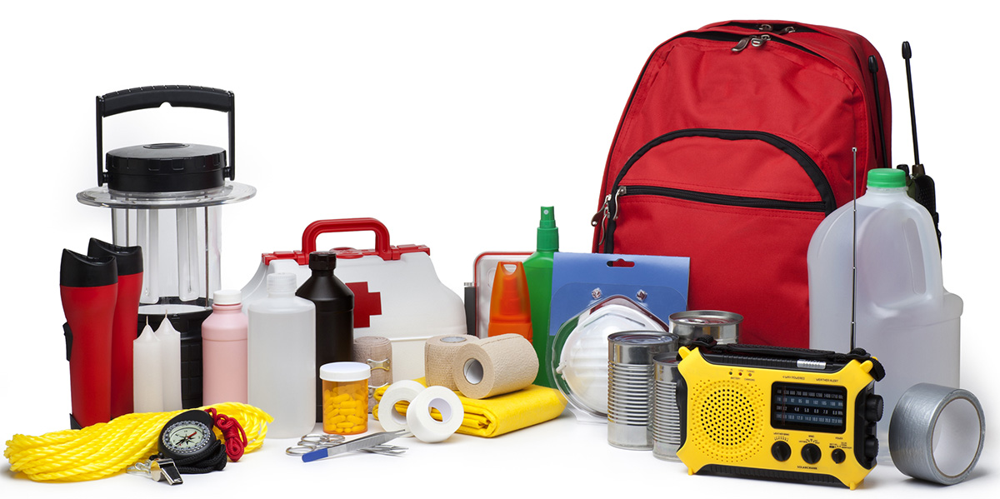
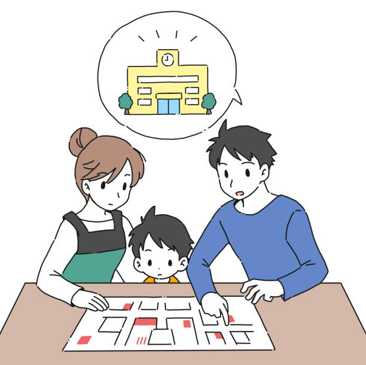
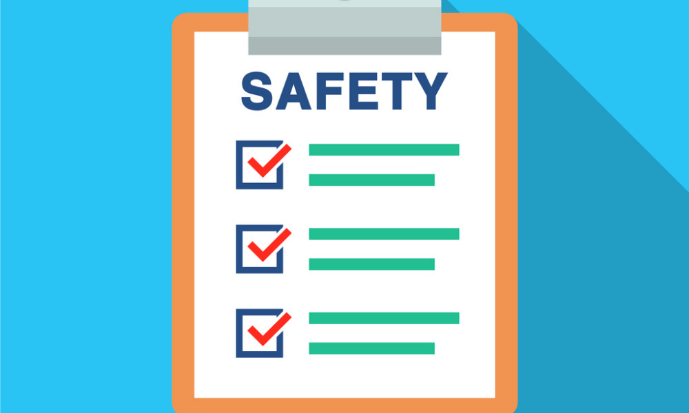

Understanding Earthquakes
Earthquakes are powerful natural events that can cause widespread destruction and pose a significant threat to human lives and infrastructure. Being prepared and knowing how to respond during an earthquake can make a significant difference in your safety and well-being.

Earthquake Preparedness Tips
- Create an emergency plan for your household. Identify safe spots in each room and establish a communication plan.
- Prepare an emergency kit that includes essential supplies such as food, water, medications, flashlights, and a first aid kit.
- Secure heavy furniture, appliances, and other objects that could fall or topple during an earthquake.
- Know how to shut off gas, water, and electricity in your home.
- Practice "Drop, Cover, and Hold On" during earthquake drills to protect yourself during the shaking.
- Be aware of your surroundings and identify potential hazards in your area, such as tall buildings, bridges, or unstable slopes.
- Stay informed by monitoring local news and official sources for updates and instructions during an earthquake.
- Learn basic first aid techniques to provide assistance to those in need.
- After an earthquake, be cautious of aftershocks and check for injuries, damages, and gas leaks. Follow the guidance of local authorities.

Stay Safe and Prepared
By following these earthquake preparedness tips and staying vigilant, you can enhance your safety and minimize the risks associated with earthquakes. Remember to review and practice your emergency plan regularly, update your emergency kit, and stay informed about earthquake risks in your region.

Investing time and effort into earthquake preparedness today can make a significant difference in your ability to protect yourself, your loved ones, and your community when the unexpected strikes.

If you would like more information on earthquake preparedness, you can visit reliable sources such as the Ready.gov website.